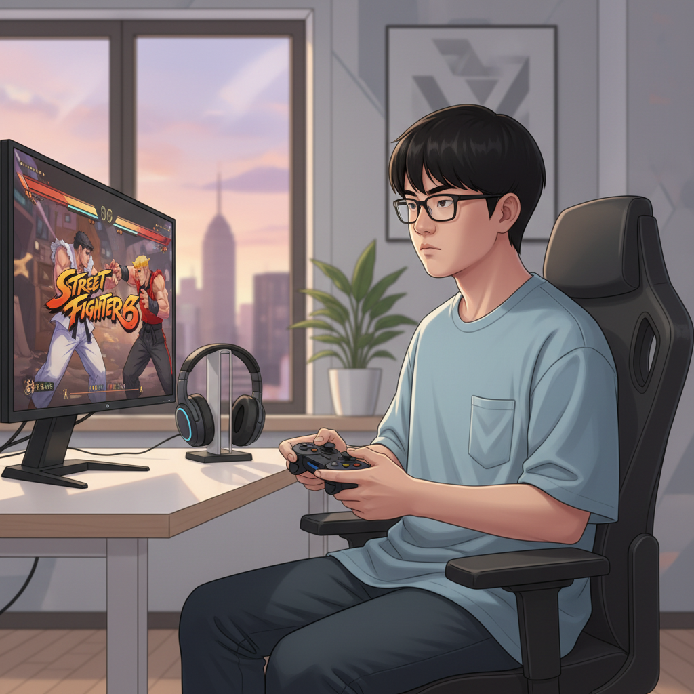
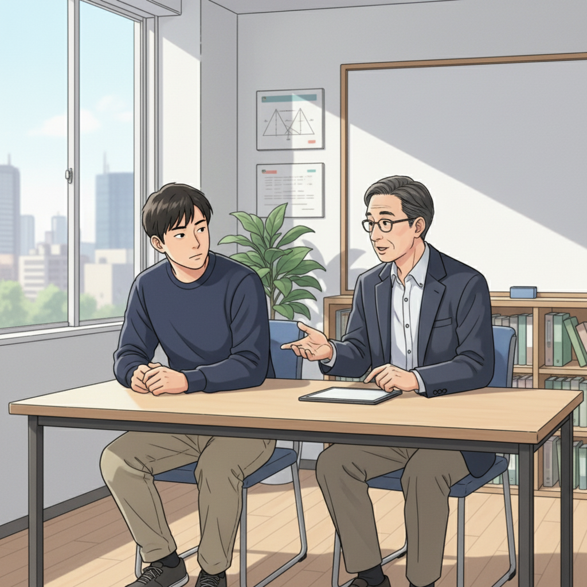
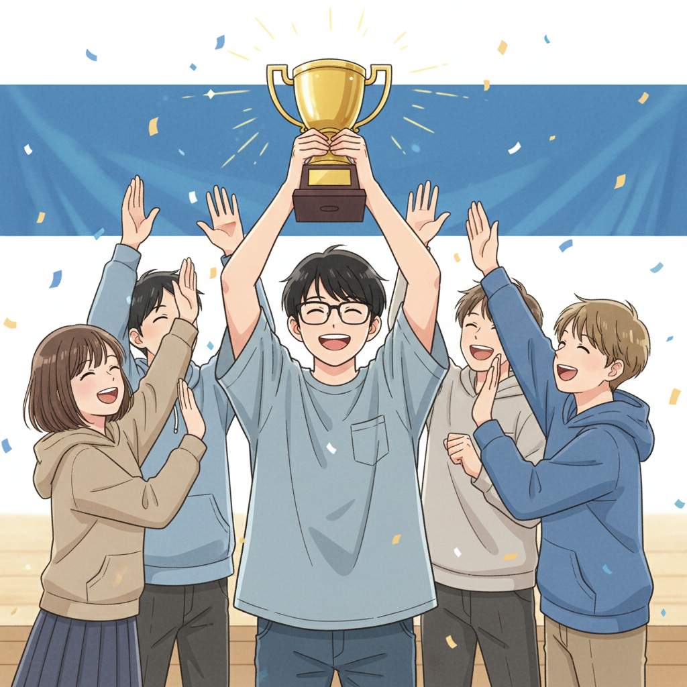
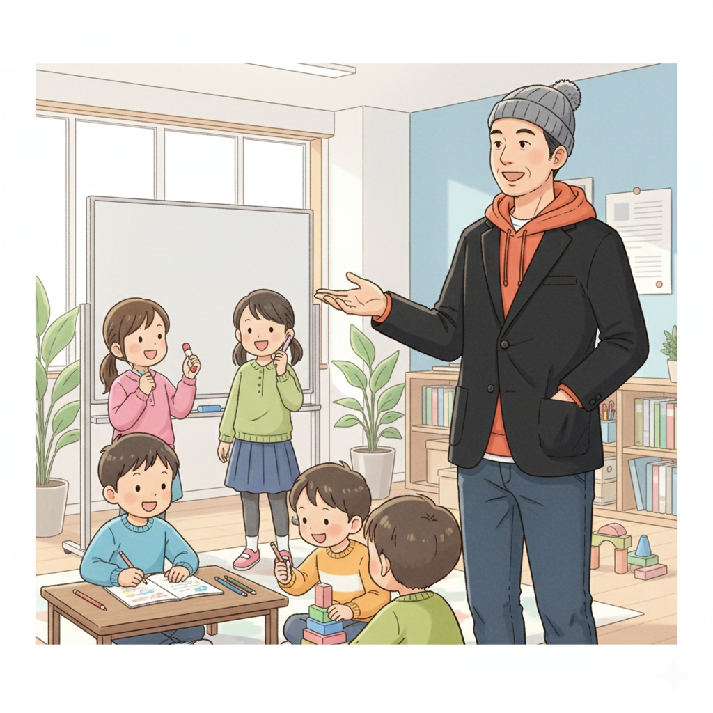

集中力が武器に！Y君、SF6で全国大会を目指す

「また負けた…」コントローラーを握るY君の指に力がこもる。得意なはずのストリートファイター6（SF6）で、なかなか勝てない日々が続いていた。そんなY君は、実は少し人とは違う特性を持っていました。診断名はADHD。集中し始めると周りの音が聞こえなくなるほどの集中力を持つ反面、注意が散漫になりやすく、ミスも多い。小さい頃から生きづらさを感じていたY君でしたが、高校生の時にif塾の塾頭と出会い、人生が大きく変わります。
塾頭は言いました。「Y君のその集中力は、すごい才能だよ！それを活かせる場所を探してみよう」
Y君は塾頭の勧めで、以前から趣味でプレイしていたSF6に本気で取り組むことに。if塾でMinecraft コマンドを学んだ経験から、ゲームのロジックを理解するのが得意だったY君は、キャラクターの特性や相手の動きを分析し、独自の戦略を立て始めました。
反応速度を活かす！Y君、プロゲーマーへの挑戦

Y君の才能を見抜いたのは、塾頭だけではありませんでした。同じくif塾に通う塾長も、Y君の才能に可能性を感じていました。塾長自身もADHD・ASDの診断を受け、中学時代は特別支援学級に通っていましたが、高校で塾頭と出会い、国立大学に進学。自身の経験から、Y君の才能を伸ばすためのサポートを惜しみませんでした。
「Y君の反応速度は本当にすごい。FPSゲームでもトップレベルになれるんじゃないかな？」塾長はそう話します。SF6は一瞬の判断が勝敗を分けるゲーム。Y君の並外れた反応速度は、まさに天性の才能でした。if塾では、Y君のように発達障害を持つ子どもたちが、それぞれの才能を活かしてプログラミングやデザイン、音楽など、様々な分野で活躍しています。
Y君は練習を重ねるうちに、みるみる上達。オンライン対戦では連戦連勝を重ね、ついに全国大会への出場権を獲得しました。
失敗を恐れない！Y君、大きな舞台へ

全国大会当日。緊張した面持ちのY君でしたが、if塾で培った自信と、仲間たちの応援を胸に、強豪ひしめく舞台へと挑みました。結果は…見事優勝！Y君は、その集中力と反応速度を武器に、並み居る強豪を打ち破り、頂点に立ったのです。
Y君の成功は、特別支援級 大学進学を目指す子どもたちにとっても、大きな希望となりました。発達特性は決して「障害」ではありません。それを「才能」に変えることができる。Y君の姿は、それを証明してくれました。if塾では、Y君のように、自分の才能を信じ、夢に向かって挑戦する子どもたちを全力でサポートしています。
もしあなたが、自分に自信が持てなかったり、何をやってもうまくいかないと感じているなら、ぜひif塾に遊びに来てください。きっと、あなただけの才能が見つかるはずです。
if塾で才能を見つけよう！

if塾では、eスポーツ以外にも、プログラミング、デザイン、音楽など、様々な分野で才能を伸ばすためのサポートを行っています。Minecraft コマンドを応用したプログラミング学習や、デザインソフトを使った作品制作など、子どもたちの興味や関心に合わせて、様々なプログラムを用意しています。
「好きなことに没頭する力は大きな強みになる」「小さな成功体験の積み重ねが自信につながる」if塾では、これらの価値観を大切に、子どもたちの成長をサポートしています。あなたもif塾で、自分だけの才能を見つけてみませんか？
さあ、私たちと一緒に、新しい自分を見つけに行きましょう！
🎯 興味を持っていただいた方へ
if塾では、発達特性を持つ子どもたちの「好き」を「才能」に変える教育を行っています。現在の記事内容と実際の活動に大きなズレはありませんが、詳細については直接お問い合わせください。
📌 記事について
この記事は、塾頭による完全自動化への挑戦としてAIが自動生成しています。将来的には塾頭が執筆しているような記事になることを目指しており、現時点では事実と異なる内容が含まれる可能性があります。最新の正確な情報については、お問い合わせフォームよりご確認ください。
🤖 Generated with AI - if塾のブログ自動化プロジェクト